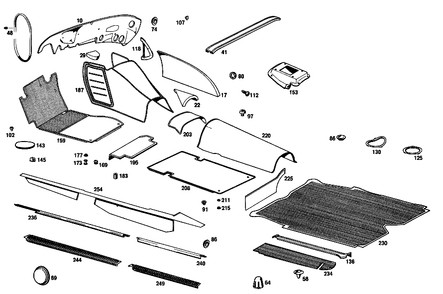

| № | Артикул | Название | Кол. | Примечание | Ограничение |
|---|---|---|---|---|---|
| 10 | A 108 682 05 26 | ШУМОИЗОЛЯЦИЯ | 1 | Рулевое управление: Влево | |
| 17 | A 108 682 08 13 | ШУМОИЗОЛЯЦИЯ | 1 | СПРАВА [001] 016 UP TO CHASSIS 001858 EXCEPT FOR, SEE FOOTNOTE 62; 018 UP TO CHASSIS 002019 EXCEPT FOR, 001907,001911 [062] 001473, 001548, 001702, 001722, 001786, 001793, 001797, 001801, 001804, 001853- 001857. | |
| 22 | A 108 682 09 13 | ШУМОИЗОЛЯЦИЯ | 1 | [001] 016 UP TO CHASSIS 001858 EXCEPT FOR, SEE FOOTNOTE 62; 018 UP TO CHASSIS 002019 EXCEPT FOR, 001907,001911 [062] 001473, 001548, 001702, 001722, 001786, 001793, 001797, 001801, 001804, 001853- 001857. | |
| 29 | A 108 682 10 13 | ШУМОИЗОЛЯЦИЯ | 1 | [001] 016 UP TO CHASSIS 001858 EXCEPT FOR, SEE FOOTNOTE 62; 018 UP TO CHASSIS 002019 EXCEPT FOR, 001907,001911 [062] 001473, 001548, 001702, 001722, 001786, 001793, 001797, 001801, 001804, 001853- 001857. | |
| 41 | A 115 682 00 52 | ШУМОИЗОЛЯЦИЯ | - | ||
| 48 | A 000 987 50 70 | резиновый профиль | 1 | 465 MM [404] ЗАКАЗЫВАТЬ ПОГОННЫМИ МЕТРАМИ [007] 016 UP TO CHASSIS 000036 | |
| 58 | A 111 997 12 81 | втулка | 2 | ||
| 64 | A 110 683 03 36 | ПАНЕЛЬ | 2 | ||
| 69 | A 110 987 06 44 | Запорная шайба | 2 | ||
| 74 | A 110 987 08 44 | Диск | 0 | 18.5 MM | |
| 74 | A 110 987 08 44 | - Диск | 1 | для HOLE IN FIRE WALL IF NO RADIO SET HAS BEEN INSTALLED; 18.5 MM | |
| 74 | A 110 987 08 44 | - Диск | 2 | для HOLES IN FRONT PANEL PILLAR IF NO SLIDING ROOF HAS BEEN INSTALLED; 18.5 MM [009] 015 FROM CHASSIS 002134 | |
| 80 | A 110 987 09 44 | Диск | - | 26.5 MM | |
| 80 | A 113 987 00 44 | Диск | 2 | 20.5 MM | |
| 86 | A 113 987 00 44 | Диск | 34 | 20.5 MM | |
| 91 | A 110 987 00 39 | Пробка | - | 10mm | |
| 91 | A 000 997 33 20 | Запорная крышка | 20 | 10 MM | |
| 97 | A 000 990 13 22 | болт | 4 | ||
| 102 | A 111 987 12 15 | ЗАГЛУШКА | - | ||
| 102 | A 000 987 18 40 | Резиновый буфер | 19 | ||
| 112 | A 000 987 11 15 | ЗАГЛУШКА | - | ||
| 112 | A 000 997 48 86 | Пробка | 4 | [013] 015 FROM CHASSIS 000710 | |
| 125 | A 110 683 01 10 | КРЫШКА | - | ||
| 125 | A 123 683 00 10 | Крышка | 2 | ||
| 130 | A 110 683 02 10 | КРЫШКА | - | ||
| 130 | A 123 683 00 10 | Крышка | 2 | ||
| 136 | A 108 683 01 24 | НАКЛАДКА | 1 | В БАГАЖ. ОТДЕЛЕНИИ СЛЕВА | |
| 143 | A 110 683 00 10 | Крышка | 1 | [016] 015 UP TO CHASSIS 002303 | |
| 145 | A 001 988 44 78 | Скоба | 2 | [016] 015 UP TO CHASSIS 002303 | |
| 159 | A 109 680 17 40 | НАСТИЛ | 1 | СЛЕВА Рулевое управление: Влево [001] 016 UP TO CHASSIS 001858 EXCEPT FOR, SEE FOOTNOTE 62; 018 UP TO CHASSIS 002019 EXCEPT FOR, 001907,001911 [062] 001473, 001548, 001702, 001722, 001786, 001793, 001797, 001801, 001804, 001853- 001857. [402] БОЛЬШЕ НЕ ПОСТАВЛЯЕТСЯ [020] STATE COLOR AND CHASSIS NO. WHEN ORDERING | |
| 169 | A 000 988 22 80 | КНОПКА | - | ||
| 169 | A 000 988 14 80 | Кнопка | 4 | [001] 016 UP TO CHASSIS 001858 EXCEPT FOR, SEE FOOTNOTE 62; 018 UP TO CHASSIS 002019 EXCEPT FOR, 001907,001911 [062] 001473, 001548, 001702, 001722, 001786, 001793, 001797, 001801, 001804, 001853- 001857. | |
| 173 | A 000 988 14 80 | Кнопка | 2 | [001] 016 UP TO CHASSIS 001858 EXCEPT FOR, SEE FOOTNOTE 62; 018 UP TO CHASSIS 002019 EXCEPT FOR, 001907,001911 [062] 001473, 001548, 001702, 001722, 001786, 001793, 001797, 001801, 001804, 001853- 001857. | |
| 177 | A 136 988 09 81 | Кнопка-застежка | - | ||
| 177 | A 000 988 84 81 | Кнопка-застежка | NB | ||
| 187 | A 109 680 01 45 | НАСТИЛ | 1 | Рулевое управление: Влево [001] 016 UP TO CHASSIS 001858 EXCEPT FOR, SEE FOOTNOTE 62; 018 UP TO CHASSIS 002019 EXCEPT FOR, 001907,001911 [062] 001473, 001548, 001702, 001722, 001786, 001793, 001797, 001801, 001804, 001853- 001857. [020] STATE COLOR AND CHASSIS NO. WHEN ORDERING | |
| 195 | A 109 680 01 47 | НАСТИЛ | 1 | СЛЕВА Рулевое управление: Влево [001] 016 UP TO CHASSIS 001858 EXCEPT FOR, SEE FOOTNOTE 62; 018 UP TO CHASSIS 002019 EXCEPT FOR, 001907,001911 [062] 001473, 001548, 001702, 001722, 001786, 001793, 001797, 001801, 001804, 001853- 001857. [020] STATE COLOR AND CHASSIS NO. WHEN ORDERING | |
| 203 | A 109 680 06 45 | НАСТИЛ | 1 | [001] 016 UP TO CHASSIS 001858 EXCEPT FOR, SEE FOOTNOTE 62; 018 UP TO CHASSIS 002019 EXCEPT FOR, 001907,001911 [062] 001473, 001548, 001702, 001722, 001786, 001793, 001797, 001801, 001804, 001853- 001857. [020] STATE COLOR AND CHASSIS NO. WHEN ORDERING | |
| 208 | A 109 680 00 41 | НАСТИЛ | 2 | [020] STATE COLOR AND CHASSIS NO. WHEN ORDERING | |
| 211 | A 111 990 10 40 | Диск | 4 | ||
| 215 | A 136 988 09 81 | Кнопка-застежка | - | ||
| 215 | A 000 988 84 81 | Кнопка-застежка | 4 | ||
| 220 | A 109 680 07 45 | НАСТИЛ | 1 | [020] STATE COLOR AND CHASSIS NO. WHEN ORDERING | |
| 225 | A 109 680 01 44 | НАСТИЛ | 1 | СЛЕВА [020] STATE COLOR AND CHASSIS NO. WHEN ORDERING | |
| 230 | A 110 684 02 05 | НАСТИЛ | - | ||
| 234 | A 108 684 00 06 | НАСТИЛ | 1 | ||
| 236 | A 108 686 01 36 | ПЛАНКА | - | ||
| 236 | A 108 686 05 36 | ПЛАНКА | 1 | СЛЕВА | |
| 240 | A 109 686 01 36 | ПЛАНКА | 1 | BELOW REAR DOOR, LEFT | |
| 244 | A 108 686 01 80 | Покрытие | 1 | СЛЕВА [020] STATE COLOR AND CHASSIS NO. WHEN ORDERING | |
| 249 | A 109 686 03 80 | Покрытие | 1 | СЛЕВА [020] STATE COLOR AND CHASSIS NO. WHEN ORDERING | |
| 254 | A 109 680 01 43 | НАСТИЛ | 1 | СЛЕВА [020] STATE COLOR AND CHASSIS NO. WHEN ORDERING | |
| 257 | A 109 680 47 17 | ПАНЕЛЬ | - | Рулевое управление: Влево | |
| 257 | A 108 680 76 17 | Крышка | 1 | СПРАВА Рулевое управление: Влево [020] STATE COLOR AND CHASSIS NO. WHEN ORDERING | |
| 270 | A 109 680 27 17 | ПАНЕЛЬ | 1 | СЛЕВА Рулевое управление: Влево [020] STATE COLOR AND CHASSIS NO. WHEN ORDERING | |
| 277 | A 000 988 23 78 | Скоба | NB | ||
| 283 | A 112 990 00 42 | ШАЙБА | - | ||
| 283 | A 301 990 00 42 | Диск | 1 | ||
| 288 | A 109 680 06 80 | Обшивка | 1 | FRONT PANEL, LATERAL RIGHT, с POCKET Рулевое управление: Влево [020] STATE COLOR AND CHASSIS NO. WHEN ORDERING | |
| 295 | A 109 688 02 20 | ПЛАНКА | 1 | СПРАВА | |
| 300 | A 109 688 01 41 | Обшивка | 1 | СЛЕВА | |
| 307 | A 108 680 07 91 | Корпус перчаточного ящика | 1 | Рулевое управление: Влево | |
| 312 | A 123 990 00 92 | Распорная заклепка | 7 | [043] 016 UP TO CHASSIS 002221 EXCEPT FOR 002198-002208,002210-002220; 018 UP TO CHASSIS 002794 EXCEPT FOR 002756-002761,002764-002777,002779-002793 | |
| 317 | A 109 680 07 98 | КРЫШКА ВЕЩ. ЯЩИКА | 1 | Рулевое управление: Влево [043] 016 UP TO CHASSIS 002221 EXCEPT FOR 002198-002208,002210-002220; 018 UP TO CHASSIS 002794 EXCEPT FOR 002756-002761,002764-002777,002779-002793 [030] ENCLOSE SAMPLE OF VENEER WHEN ORDERING [032] 015 FROM CHASSIS 002131 | |
| 322 | A 108 680 01 70 | РУЧКА | 1 | Рулевое управление: Влево [020] STATE COLOR AND CHASSIS NO. WHEN ORDERING [043] 016 UP TO CHASSIS 002221 EXCEPT FOR 002198-002208,002210-002220; 018 UP TO CHASSIS 002794 EXCEPT FOR 002756-002761,002764-002777,002779-002793 [032] 015 FROM CHASSIS 002131 | |
| 338 | A 108 680 02 84 | - Крышка | 1 | БЕЗ КЛЮЧА [032] 015 FROM CHASSIS 002131 [035] ПРИ ЗАКАЗЕ УКАЗАТЬ НОМЕР КОМПЛЕКТА ЗАМКОВ | |
| 343 | A 000 760 04 06 | - Главный ключ | 1 | ОСНОВН. КЛЮЧ HUF [032] 015 FROM CHASSIS 002131 [035] ПРИ ЗАКАЗЕ УКАЗАТЬ НОМЕР КОМПЛЕКТА ЗАМКОВ | |
| 347 | A 108 680 01 51 | ШАРНИР | 2 | ||
| 351 | A 000 994 45 45 | предохранитель | 2 | ||
| 355 | A 108 689 00 32 | СКОБА | 1 | [043] 016 UP TO CHASSIS 002221 EXCEPT FOR 002198-002208,002210-002220; 018 UP TO CHASSIS 002794 EXCEPT FOR 002756-002761,002764-002777,002779-002793 | |
| 359 | A 110 993 09 01 | пружина | 1 | [043] 016 UP TO CHASSIS 002221 EXCEPT FOR 002198-002208,002210-002220; 018 UP TO CHASSIS 002794 EXCEPT FOR 002756-002761,002764-002777,002779-002793 | |
| 368 | A 000 987 97 40 | Резиновый буфер | 2 | ||
| 372 | A 109 680 03 96 | КРЫШКА | 1 | [030] ENCLOSE SAMPLE OF VENEER WHEN ORDERING | |
| 375 | A 109 817 00 14 | ОБОЗНАЧЕНИЕ МОДЕЛИ | 1 | "300 SEL" | |
| 380 | A 108 994 01 45 | ПРЕДОХРАНИТЕЛЬ | 2 | ||
| 390 | A 108 689 01 08 | ПАНЕЛЬ | 1 | [020] STATE COLOR AND CHASSIS NO. WHEN ORDERING | |
| 393 | A 110 680 00 67 | КОНЦЕВОЙ ЭЛЕМЕНТ | - | ||
| 397 | A 000 987 94 40 | Резиновый буфер | 2 | ||
| 400 | A 108 680 09 06 | Обшивка | - | Рулевое управление: Влево | |
| 400 | A 108 680 17 06 | Защитная подушка | 1 | ВНИЗУ Рулевое управление: Влево [020] STATE COLOR AND CHASSIS NO. WHEN ORDERING [045] 016 UP TO CHASSIS 002209 EXCEPT FOR 002198-002208; 018 UP TO CHASSIS 002866 EXCEPT FOR, SEE FOOTNOTE 63 [063] 002749, 002756- 002761, 002764- 002777, 002779- 002837, 002839- 002865. | |
| 405 | A 000 994 33 45 | предохранитель | - | ||
| 405 | A 140 994 10 45 | предохранитель | 6 | ||
| 409 | A 108 680 07 06 | Обшивка | - | Рулевое управление: Влево | |
| 409 | A 108 680 19 06 | Обшивка | 1 | СВЕРХУ Рулевое управление: Влево [020] STATE COLOR AND CHASSIS NO. WHEN ORDERING [045] 016 UP TO CHASSIS 002209 EXCEPT FOR 002198-002208; 018 UP TO CHASSIS 002866 EXCEPT FOR, SEE FOOTNOTE 63 [063] 002749, 002756- 002761, 002764- 002777, 002779- 002837, 002839- 002865. | |
| 413 | A 000 985 05 62 | Диск | 4 | ||
| 418 | A 108 689 03 71 | МОЛДИНГ | 1 | ВНИЗУ Рулевое управление: Влево [038] 015 FROM CHASSIS 000247 ALSO INSTALLED ON 000194,000222,000225,000238,000240-000245 EXCEPT FOR 000280 | |
| 421 | A 000 994 42 45 | ПРЕДОХРАНИТЕЛЬ | - | ||
| 421 | A 001 994 54 45 | Пружинная гайка | 10 | ||
| 425 | A 108 689 01 72 | МОЛДИНГ | 1 | СВЕРХУ СЛЕВА Рулевое управление: Влево [031] 015 UP TO CHASSIS 002130 | |
| 429 | A 108 689 02 72 | МОЛДИНГ | 1 | СВЕРХУ СПРАВА Рулевое управление: Влево [402] БОЛЬШЕ НЕ ПОСТАВЛЯЕТСЯ [031] 015 UP TO CHASSIS 002130 | |
| 434 | A 000 994 46 45 | ПРЕДОХРАНИТЕЛЬ | 6 | [031] 015 UP TO CHASSIS 002130 | |
| 437 | A 108 680 11 06 | Обшивка | 1 | СВЕРХУ СЛЕВА Рулевое управление: Влево [020] STATE COLOR AND CHASSIS NO. WHEN ORDERING [043] 016 UP TO CHASSIS 002221 EXCEPT FOR 002198-002208,002210-002220; 018 UP TO CHASSIS 002794 EXCEPT FOR 002756-002761,002764-002777,002779-002793 [032] 015 FROM CHASSIS 002131 | |
| 440 | A 108 680 14 06 | Обшивка | 1 | СВЕРХУ СПРАВА Рулевое управление: Влево [020] STATE COLOR AND CHASSIS NO. WHEN ORDERING [043] 016 UP TO CHASSIS 002221 EXCEPT FOR 002198-002208,002210-002220; 018 UP TO CHASSIS 002794 EXCEPT FOR 002756-002761,002764-002777,002779-002793 [032] 015 FROM CHASSIS 002131 | |
| 447 | A 109 680 85 83 | Обшивка | 1 | Рулевое управление: Влево [030] ENCLOSE SAMPLE OF VENEER WHEN ORDERING [032] 015 FROM CHASSIS 002131 | |
| 451 | A 108 836 03 42 | - РАМА | 1 | СЛЕВА | |
| 455 | A 108 689 03 30 | - КОЛПАЧОК | 1 | СЛЕВА Рулевое управление: Влево [032] 015 FROM CHASSIS 002131 | |
| 458 | A 115 689 00 80 | - Декоративная розетка | 1 | [032] 015 FROM CHASSIS 002131 | |
| 462 | A 115 689 00 97 | - Резиновое кольцо | 1 | [032] 015 FROM CHASSIS 002131 | |
| 469 | A 109 680 01 83 | Обшивка | 1 | Рулевое управление: Влево [030] ENCLOSE SAMPLE OF VENEER WHEN ORDERING | |
| A 000 983 36 91 | ПАПКА | 0 | 1 MM [404] ЗАКАЗЫВАТЬ ПОГОННЫМИ МЕТРАМИ | ||
| A 000 983 36 91 | - ПАПКА | 1 | UNDER WATER TANK, CENTER 200 X 360 MM | ||
| A 000 983 36 91 | - ПАПКА | 2 | СТОЙКА ЗАДНЯЯ 324X763 MM | ||
| A 000 983 36 91 | - ПАПКА | 1 | РАМА КРЫШИ СЗАДИ 187X1078 MM | ||
| A 000 983 36 91 | - ПАПКА | 1 | РАМА КРЫШИ СПЕРЕДИ 174X1304 MM | ||
| A 000 983 36 91 | - ПАПКА | 2 | РАМА КРЫШИ СБОКУ 172X1236 MM | ||
| A 000 983 29 91 | ПАПКА | 0 | 3 MM [404] ЗАКАЗЫВАТЬ ПОГОННЫМИ МЕТРАМИ | ||
| A 000 983 29 91 | - ПАПКА | 1 | FIRE WALL, CENTER 265 X 391 MM Рулевое управление: Влево | ||
| A 000 983 29 91 | - ПАПКА | 1 | FIRE WALL, LEFT 583 X 731 MM Рулевое управление: Вправо [001] 016 UP TO CHASSIS 001858 EXCEPT FOR, SEE FOOTNOTE 62; 018 UP TO CHASSIS 002019 EXCEPT FOR, 001907,001911 [062] 001473, 001548, 001702, 001722, 001786, 001793, 001797, 001801, 001804, 001853- 001857. | ||
| A 000 983 29 91 | - ПАПКА | 1 | WATER TANK, CENTER 205 X 596 MM | ||
| A 000 983 29 91 | - ПАПКА | 1 | ТУННЕЛЬ КП 684X794 MM | ||
| A 000 983 29 91 | - ПАПКА | 1 | ТУННЕЛЬ ПОЛА ВОДИТЕЛЯ 165X225 MM [001] 016 UP TO CHASSIS 001858 EXCEPT FOR, SEE FOOTNOTE 62; 018 UP TO CHASSIS 002019 EXCEPT FOR, 001907,001911 [062] 001473, 001548, 001702, 001722, 001786, 001793, 001797, 001801, 001804, 001853- 001857. | ||
| A 000 983 29 91 | ПАПКА | 0 | 3 MM [404] ЗАКАЗЫВАТЬ ПОГОННЫМИ МЕТРАМИ | ||
| A 000 983 29 91 | - ПАПКА | 1 | FIRE WALL, CENTER 234 X 365 MM Рулевое управление: Вправо | ||
| A 000 983 29 91 | - ПАПКА | 1 | FIRE WALL, BOTTOM RIGHT 456 X 554 MM Рулевое управление: Вправо [001] 016 UP TO CHASSIS 001858 EXCEPT FOR, SEE FOOTNOTE 62; 018 UP TO CHASSIS 002019 EXCEPT FOR, 001907,001911 [062] 001473, 001548, 001702, 001722, 001786, 001793, 001797, 001801, 001804, 001853- 001857. | ||
| A 000 983 29 91 | - ПАПКА | 1 | FIRE WALL, TOP RIGHT 282 X 434 MM Рулевое управление: Вправо | ||
| A 000 983 29 91 | - ПАПКА | 1 | FRONT PANEL, SIDE BOTTOM LEFT 389 X 470 MM Рулевое управление: Вправо | ||
| A 000 983 29 91 | - ПАПКА | 1 | FRONT PANEL, SIDE BOTTOM RIGHT 365 X 389 MM Рулевое управление: Вправо | ||
| A 000 983 29 91 | - ПАПКА | 1 | FIRE WALL, TOP LEFT 150 X 364 MM Рулевое управление: Влево | ||
| A 000 983 29 91 | - ПАПКА | 1 | FIRE WALL, BOTTOM RIGHT 347 X 566 MM Рулевое управление: Влево [001] 016 UP TO CHASSIS 001858 EXCEPT FOR, SEE FOOTNOTE 62; 018 UP TO CHASSIS 002019 EXCEPT FOR, 001907,001911 [062] 001473, 001548, 001702, 001722, 001786, 001793, 001797, 001801, 001804, 001853- 001857. | ||
| A 000 983 29 91 | - ПАПКА | 1 | FIRE WALL, TOP RIGHT 387 X 420 MM Рулевое управление: Влево [001] 016 UP TO CHASSIS 001858 EXCEPT FOR, SEE FOOTNOTE 62; 018 UP TO CHASSIS 002019 EXCEPT FOR, 001907,001911 [062] 001473, 001548, 001702, 001722, 001786, 001793, 001797, 001801, 001804, 001853- 001857. | ||
| A 000 983 29 91 | - ПАПКА | 1 | FIRE WALL, BOTTOM LEFT 475 X 502 MM Рулевое управление: Влево | ||
| A 000 983 29 91 | - ПАПКА | 1 | FRONT PANEL, SIDE BOTTOM LEFT 389 X 389 MM Рулевое управление: Влево | ||
| A 000 983 29 91 | - ПАПКА | 1 | FRONT PANEL, SIDE BOTTOM RIGHT 389 X 470 MM Рулевое управление: Влево | ||
| A 000 983 29 91 | - ПАПКА | 1 | CENTRAL PART, INSIDE, CENTER 161 X 281 MM | ||
| A 000 983 29 91 | - ПАПКА | 1 | WATER TANK, LEFT 182 X 181 MM | ||
| A 000 983 29 91 | - ПАПКА | 1 | WATER TANK, RIGHT 169 X 182 MM | ||
| A 000 983 29 91 | - ПАПКА | 1 | ПОЛ БАГАЖН. ОТДЕЛЕНИЯ СЛЕВА 372X563 MM | ||
| A 000 983 29 91 | - ПАПКА | 1 | ПОЛ БАГАЖ. ОТДЕЛЕНИЯ СПРАВА 377X480 MM | ||
| A 000 983 29 91 | - ПАПКА | 2 | REAR FLOOR 532 X 796 MM | ||
| A 000 983 29 91 | - ПАПКА | 2 | ПОД ЗАДНИМ СИДЕНЬЕМ 625X665 MM | ||
| A 000 983 29 91 | - ПАПКА | 2 | REAR BODY PANEL, TOP 366 X 706 MM | ||
| A 000 983 29 91 | - ПАПКА | 2 | REAR BODY PANEL, BOTTOM 110 X 572 MM | ||
| A 000 983 29 91 | - ПАПКА | 1 | ТУННЕЛЬ ЗАДН.ЧАСТИ 534X845 MM | ||
| A 000 983 29 91 | - ПАПКА | 2 | ПОЛ БАГАЖНИКА 505X735 MM | ||
| A 000 983 29 91 | - ПАПКА | 1 | UNDER HAT SHELF 277 X 1390 MM | ||
| A 000 983 29 91 | - ПАПКА | 2 | IN LUGGAGE COMPARTMENT, RIGHT SIDE 168 X 750 MM | ||
| A 000 983 29 91 | - ПАПКА | 2 | ПОЛ БАГАЖНИКА 85X570 MM | ||
| A 000 983 29 91 | - ПАПКА | 1 | ПОЛ ВОДИТЕЛЯ СЛЕВА 522X558 | ||
| A 000 983 29 91 | - ПАПКА | 1 | ПОЛ ВОДИТЕЛЯ,СПРАВА 544X558 MM | ||
| A 000 983 30 91 | ПАПКА | 0 | 5 MM [404] ЗАКАЗЫВАТЬ ПОГОННЫМИ МЕТРАМИ | ||
| A 000 983 30 91 | - ПАПКА | 1 | LUGGAGE COMPARTMENT FLOOR, CENTER 190 X 570 MM | ||
| A 000 983 42 91 | ПАПКА | 0 | 7 MM [404] ЗАКАЗЫВАТЬ ПОГОННЫМИ МЕТРАМИ | ||
| A 000 983 42 91 | - ПАПКА | 2 | REAR WHEEL ARCH 381 X 678 MM [003] 015 FROM CHASSIS 000029 | ||
| A 000 983 42 91 | - ПАПКА | 2 | CROSS MEMBER, REAR SEAT 153 X 576 MM [003] 015 FROM CHASSIS 000029 | ||
| A 108 682 03 01 | ШУМОИЗОЛЯЦИЯ | - | Рулевое управление: Влево | ||
| A 000 989 18 10 | Изоляционный мат | 1 | LEFT, FRONT FLOOR Рулевое управление: Влево [001] 016 UP TO CHASSIS 001858 EXCEPT FOR, SEE FOOTNOTE 62; 018 UP TO CHASSIS 002019 EXCEPT FOR, 001907,001911 [062] 001473, 001548, 001702, 001722, 001786, 001793, 001797, 001801, 001804, 001853- 001857. | ||
| A 108 682 04 01 | ШУМОИЗОЛЯЦИЯ | 1 | RIGHT, FRONT FLOOR Рулевое управление: Влево [001] 016 UP TO CHASSIS 001858 EXCEPT FOR, SEE FOOTNOTE 62; 018 UP TO CHASSIS 002019 EXCEPT FOR, 001907,001911 [062] 001473, 001548, 001702, 001722, 001786, 001793, 001797, 001801, 001804, 001853- 001857. | ||
| A 108 682 05 01 | ШУМОИЗОЛЯЦИЯ | 1 | LEFT, FRONT FLOOR Рулевое управление: Вправо [001] 016 UP TO CHASSIS 001858 EXCEPT FOR, SEE FOOTNOTE 62; 018 UP TO CHASSIS 002019 EXCEPT FOR, 001907,001911 [062] 001473, 001548, 001702, 001722, 001786, 001793, 001797, 001801, 001804, 001853- 001857. | ||
| A 108 682 02 01 | ШУМОИЗОЛЯЦИЯ | - | Рулевое управление: Вправо | ||
| A 000 989 18 10 | Изоляционный мат | 1 | RIGHT, FRONT FLOOR Рулевое управление: Вправо [001] 016 UP TO CHASSIS 001858 EXCEPT FOR, SEE FOOTNOTE 62; 018 UP TO CHASSIS 002019 EXCEPT FOR, 001907,001911 [062] 001473, 001548, 001702, 001722, 001786, 001793, 001797, 001801, 001804, 001853- 001857. | ||
| A 108 682 07 26 | ШУМОИЗОЛЯЦИЯ | - | Рулевое управление: Влево | ||
| A 000 983 42 91 | ПАПКА | 1 | LEFT, FIRE WALL, SIDE Рулевое управление: Влево | ||
| A 108 682 08 26 | ШУМОИЗОЛЯЦИЯ | - | |||
| A 000 983 42 91 | ПАПКА | 1 | RIGHT, FIRE WALL, SIDE | ||
| A 108 682 06 26 | ШУМОИЗОЛЯЦИЯ | 1 | ПЕРЕГОРОДКА В ЦЕНТРЕ Рулевое управление: Вправо | ||
| A 108 682 09 26 | ШУМОИЗОЛЯЦИЯ | - | Рулевое управление: Вправо | ||
| A 000 983 42 91 | ПАПКА | 1 | LEFT, AT FIRE WALL, SIDE TOP Рулевое управление: Вправо | ||
| A 108 682 19 26 | ШУМОИЗОЛЯЦИЯ | - | |||
| A 108 682 43 26 | ШУМОИЗОЛЯЦИЯ | - | Рулевое управление: Вправо | ||
| A 108 682 45 26 | ШУМОИЗОЛЯЦИЯ | 1 | LEFT, AT FIRE WALL, SIDE BOTTOM Рулевое управление: Вправо | ||
| A 108 682 07 13 | ШУМОИЗОЛЯЦИЯ | 1 | СЛЕВА [001] 016 UP TO CHASSIS 001858 EXCEPT FOR, SEE FOOTNOTE 62; 018 UP TO CHASSIS 002019 EXCEPT FOR, 001907,001911 [062] 001473, 001548, 001702, 001722, 001786, 001793, 001797, 001801, 001804, 001853- 001857. | ||
| A 000 983 00 98 | ПОРОЛОН | - | |||
| A 000 983 35 98 | ПОРОЛОН | 0 | 5 MM [404] ЗАКАЗЫВАТЬ ПОГОННЫМИ МЕТРАМИ | ||
| A 000 983 35 98 | ПОРОЛОН | 2 | СТОЙКА ЗАДНЯЯ 324X763 MM | ||
| A 000 983 35 98 | ПОРОЛОН | 1 | РАМА КРЫШИ СЗАДИ 187X1078 MM | ||
| A 000 983 35 98 | ПОРОЛОН | 1 | РАМА КРЫШИ СПЕРЕДИ 174X1304 MM | ||
| A 000 983 35 98 | ПОРОЛОН | 2 | РАМА КРЫШИ СБОКУ 172X1236 MM | ||
| A 000 983 35 98 | ПОРОЛОН | 1 | 277 X 1430 MM UNDER HAT SHELF | ||
| A 000 983 01 98 | ПОРОЛОН | - | |||
| A 000 983 35 98 | ПОРОЛОН | 0 | 10 MM [404] ЗАКАЗЫВАТЬ ПОГОННЫМИ МЕТРАМИ | ||
| A 000 983 35 98 | ПОРОЛОН | 1 | 160 X 670 MM TUNNEL, REAR FLOOR, FRONT | ||
| A 000 983 35 98 | ПОРОЛОН | 1 | 170 X 408 MM TUNNEL, REAR FLOOR, REAR | ||
| A 000 989 16 10 | ИЗОЛ. КОВРИК | 0 | 15 MM ПОЛ ВОДИТЕЛЯ 540X510 MM [004] НЕ ИСПОЛЬЗУЕТСЯ | ||
| A 000 989 16 10 | ИЗОЛ. КОВРИК | 0 | 20 MM | ||
| A 000 989 18 10 | Изоляционный мат | 0 | 7 MM | ||
| A 108 682 00 51 | ШУМОИЗОЛЯЦИЯ | - | |||
| A 108 682 01 51 | ШУМОИЗОЛЯЦИЯ | - | |||
| A 108 682 06 51 | ШУМОИЗОЛЯЦИЯ | - | |||
| A 000 983 41 92 | ГРИБОК | 2 | BOW NO. 2 FROM THE FRONT | ||
| A 108 682 05 51 | ШУМОИЗОЛЯЦИЯ | - | |||
| A 000 983 41 92 | ГРИБОК | 3 | BOWS NOS. 1,3,4 | ||
| A 110 687 00 45 | КОЛПАЧОК | 1 | OVER KICK\-DOWN\-SWITCH Рулевое управление: Вправо | ||
| A 112 683 02 10 | КРЫШКА | - | Рулевое управление: Влево [004] НЕ ИСПОЛЬЗУЕТСЯ [402] БОЛЬШЕ НЕ ПОСТАВЛЯЕТСЯ | ||
| A 112 683 01 98 | УПЛОТНИТЕЛЬ | 1 | Рулевое управление: Влево [019] 015 UP TO CHASSIS 001299 | ||
| A 000 994 08 45 | предохранитель | 6 | Рулевое управление: Влево [019] 015 UP TO CHASSIS 001299 | ||
| N 007976 006303 | Шуруп | 6 | Рулевое управление: Влево [019] 015 UP TO CHASSIS 001299 | ||
| A 110 683 06 10 | КРЫШКА | 1 | [402] БОЛЬШЕ НЕ ПОСТАВЛЯЕТСЯ [018] 015,10/50,12/52 FROM CHASSIS 001300 | ||
| A 003 989 54 85 | Уплотнительная лента | 1 | [018] 015,10/50,12/52 FROM CHASSIS 001300 | ||
| A 000 994 23 45 | предохранитель | 6 | B4.2 S=1.25\-2.0 [018] 015,10/50,12/52 FROM CHASSIS 001300 | ||
| N 007981 004318 | Шуруп | 6 | 4,2X9,5 [018] 015,10/50,12/52 FROM CHASSIS 001300 | ||
| A 108 997 04 81 | втулка | 2 | |||
| A 110 987 05 44 | Запорная шайба | - | 32 MM | ||
| A 000 997 40 20 | Запорная крышка | 2 | 30.5 MM | ||
| A 001 987 03 40 | РЕЗИНОВЫЙ УПОР | - | Рулевое управление: Влево | ||
| A 126 987 01 39 | Буфер | 2 | Рулевое управление: Влево [012] 016 UP TO CHASSIS 000893; 018 UP TO CHASSIS 000233 | ||
| A 126 987 01 39 | Буфер | 4 | НА КОЛЕСН. АРКЕ СПЕРЕДИ СПРАВА Рулевое управление: Вправо [012] 016 UP TO CHASSIS 000893; 018 UP TO CHASSIS 000233 | ||
| A 000 989 51 20 | ГЕРМЕТИЗИРУЮЩИЙ СОСТАВ | - | |||
| A 001 989 33 20 | ГЕРМЕТИЗИРУЮЩИЙ СОСТАВ | NB | |||
| A 110 987 01 44 | Запорная шайба | - | [415] ПРИМЕЧ. ПО ЗАМЕНЕ ПРИМЕНИМО ТОЛЬКО ДЛЯ СТОЯЩИХ РЯДОМ ПОЗИЦИЙ | ||
| A 110 987 07 44 | Запорная шайба | 1 | 34 MM [014] 015 FROM CHASSIS 002319 | ||
| A 112 683 02 24 | НАКЛАДКА | - | |||
| A 108 683 02 24 | НАКЛАДКА | 1 | В БАГАЖ. ОТДЕЛЕНИИ СПРАВА | ||
| N 007981 004318 | Шуруп | 8 | 4,2X9,5 | ||
| A 109 683 00 28 | НАЛКАДКА СКОЛЬЗЯЩАЯ | 1 | ACCELERATOR PEDAL Рулевое управление: Вправо | ||
| A 001 987 76 25 | Защита кромок | 0 | [404] ЗАКАЗЫВАТЬ ПОГОННЫМИ МЕТРАМИ | ||
| A 001 987 76 25 | - Защита кромок | 1 | SLIDING PLATE 85 MM Рулевое управление: Вправо [404] ЗАКАЗЫВАТЬ ПОГОННЫМИ МЕТРАМИ | ||
| A 001 987 76 25 | - Защита кромок | 1 | SLIDING PLATE 75 MM Рулевое управление: Вправо [404] ЗАКАЗЫВАТЬ ПОГОННЫМИ МЕТРАМИ | ||
| A 001 987 76 25 | - Защита кромок | 1 | SLIDING PLATE 100 MM Рулевое управление: Вправо [404] ЗАКАЗЫВАТЬ ПОГОННЫМИ МЕТРАМИ | ||
| A 001 987 76 25 | - Защита кромок | 1 | INSTRUMENT PANEL BRACING 100 MM Рулевое управление: Влево [404] ЗАКАЗЫВАТЬ ПОГОННЫМИ МЕТРАМИ [015] 015 FROM CHASSIS 002184 [040] 016 FROM CHASSIS 002222; 018 FROM CHASSIS 002839 EXCEPT FOR 002816,002818,002822,002835,002837 | ||
| N 007981 003246 | Шуруп | 5 | Рулевое управление: Вправо | ||
| A 109 680 01 40 | НАСТИЛ | - | |||
| A 108 680 31 40 | НАСТИЛ | - | |||
| A 109 680 02 40 | НАСТИЛ | 1 | СПРАВА Рулевое управление: Влево [001] 016 UP TO CHASSIS 001858 EXCEPT FOR, SEE FOOTNOTE 62; 018 UP TO CHASSIS 002019 EXCEPT FOR, 001907,001911 [062] 001473, 001548, 001702, 001722, 001786, 001793, 001797, 001801, 001804, 001853- 001857. [020] STATE COLOR AND CHASSIS NO. WHEN ORDERING | ||
| A 109 680 03 40 | НАСТИЛ | 1 | СЛЕВА Рулевое управление: Вправо [001] 016 UP TO CHASSIS 001858 EXCEPT FOR, SEE FOOTNOTE 62; 018 UP TO CHASSIS 002019 EXCEPT FOR, 001907,001911 [062] 001473, 001548, 001702, 001722, 001786, 001793, 001797, 001801, 001804, 001853- 001857. [020] STATE COLOR AND CHASSIS NO. WHEN ORDERING | ||
| A 109 680 04 40 | НАСТИЛ | 1 | СПРАВА Рулевое управление: Вправо [020] STATE COLOR AND CHASSIS NO. WHEN ORDERING | ||
| A 109 680 12 40 | НАСТИЛ | - | Рулевое управление: Вправо | ||
| A 109 680 18 40 | НАСТИЛ | 1 | [022] 015 FROM CHASSIS 001643 | ||
| N 007981 003255 | Шуруп | 4 | [402] БОЛЬШЕ НЕ ПОСТАВЛЯЕТСЯ [001] 016 UP TO CHASSIS 001858 EXCEPT FOR, SEE FOOTNOTE 62; 018 UP TO CHASSIS 002019 EXCEPT FOR, 001907,001911 [062] 001473, 001548, 001702, 001722, 001786, 001793, 001797, 001801, 001804, 001853- 001857. | ||
| N 007981 003270 | Шуруп | 2 | |||
| A 109 680 02 45 | НАСТИЛ | 1 | Рулевое управление: Вправо [001] 016 UP TO CHASSIS 001858 EXCEPT FOR, SEE FOOTNOTE 62; 018 UP TO CHASSIS 002019 EXCEPT FOR, 001907,001911 [062] 001473, 001548, 001702, 001722, 001786, 001793, 001797, 001801, 001804, 001853- 001857. [020] STATE COLOR AND CHASSIS NO. WHEN ORDERING | ||
| A 109 680 02 47 | НАСТИЛ | 1 | СПРАВА Рулевое управление: Влево [001] 016 UP TO CHASSIS 001858 EXCEPT FOR, SEE FOOTNOTE 62; 018 UP TO CHASSIS 002019 EXCEPT FOR, 001907,001911 [062] 001473, 001548, 001702, 001722, 001786, 001793, 001797, 001801, 001804, 001853- 001857. [020] STATE COLOR AND CHASSIS NO. WHEN ORDERING | ||
| A 109 680 03 47 | НАСТИЛ | 1 | СЛЕВА Рулевое управление: Вправо [001] 016 UP TO CHASSIS 001858 EXCEPT FOR, SEE FOOTNOTE 62; 018 UP TO CHASSIS 002019 EXCEPT FOR, 001907,001911 [062] 001473, 001548, 001702, 001722, 001786, 001793, 001797, 001801, 001804, 001853- 001857. [020] STATE COLOR AND CHASSIS NO. WHEN ORDERING | ||
| A 109 680 04 47 | НАСТИЛ | 1 | СЛЕВА Рулевое управление: Вправо [001] 016 UP TO CHASSIS 001858 EXCEPT FOR, SEE FOOTNOTE 62; 018 UP TO CHASSIS 002019 EXCEPT FOR, 001907,001911 [062] 001473, 001548, 001702, 001722, 001786, 001793, 001797, 001801, 001804, 001853- 001857. [020] STATE COLOR AND CHASSIS NO. WHEN ORDERING | ||
| A 109 680 01 41 | НАСТИЛ | - | |||
| A 109 680 02 41 | НАСТИЛ | - | |||
| N 007981 003214 | Шуруп | 4 | B3,9X9,5 | ||
| A 109 680 02 44 | НАСТИЛ | 1 | СПРАВА [020] STATE COLOR AND CHASSIS NO. WHEN ORDERING | ||
| A 108 684 01 05 | НАСТИЛ | 1 | [020] STATE COLOR AND CHASSIS NO. WHEN ORDERING | ||
| A 108 686 02 36 | ПЛАНКА | - | |||
| A 108 686 06 36 | ПЛАНКА | 1 | СПРАВА | ||
| N 007983 003248 | Шуруп | - | |||
| A 094 990 36 08 | Шуруп | 8 | |||
| A 109 686 02 36 | ПЛАНКА | 1 | BELOW REAR DOOR, RIGHT | ||
| N 007983 003248 | Шуруп | - | |||
| A 094 990 36 08 | Шуруп | 8 | |||
| A 108 686 02 80 | Покрытие | 1 | СПРАВА [020] STATE COLOR AND CHASSIS NO. WHEN ORDERING | ||
| A 109 686 04 80 | Покрытие | 1 | СПРАВА [020] STATE COLOR AND CHASSIS NO. WHEN ORDERING | ||
| A 109 680 02 43 | НАСТИЛ | 1 | СПРАВА [020] STATE COLOR AND CHASSIS NO. WHEN ORDERING | ||
| A 109 680 04 17 | ПАНЕЛЬ | - | [025] 016 UP TO CHASSIS 001858; 018 UP TO CHASSIS 002019 | ||
| A 109 680 01 17 | ПАНЕЛЬ | - | Рулевое управление: Влево [024] 015 UP TO CHASSIS 002130 | ||
| A 109 680 17 17 | ПАНЕЛЬ | - | Рулевое управление: Влево [024] 015 UP TO CHASSIS 002130 | ||
| A 109 680 31 17 | ПАНЕЛЬ | 1 | INSTRUMENT PANEL BRACING Рулевое управление: Влево [001] 016 UP TO CHASSIS 001858 EXCEPT FOR, SEE FOOTNOTE 62; 018 UP TO CHASSIS 002019 EXCEPT FOR, 001907,001911 [062] 001473, 001548, 001702, 001722, 001786, 001793, 001797, 001801, 001804, 001853- 001857. [020] STATE COLOR AND CHASSIS NO. WHEN ORDERING | ||
| A 109 680 02 17 | ПАНЕЛЬ | - | [024] 015 UP TO CHASSIS 002130 | ||
| A 109 680 18 17 | ПАНЕЛЬ | - | [024] 015 UP TO CHASSIS 002130 | ||
| A 109 680 30 17 | ПАНЕЛЬ | 1 | INSTRUMENT PANEL BRACING Рулевое управление: Вправо [001] 016 UP TO CHASSIS 001858 EXCEPT FOR, SEE FOOTNOTE 62; 018 UP TO CHASSIS 002019 EXCEPT FOR, 001907,001911 [062] 001473, 001548, 001702, 001722, 001786, 001793, 001797, 001801, 001804, 001853- 001857. [020] STATE COLOR AND CHASSIS NO. WHEN ORDERING | ||
| A 109 680 42 17 | ПАНЕЛЬ | 1 | INSTRUMENT PANEL BRACING Рулевое управление: Вправо [002] 016 FROM CHASSIS 001859 ALSO INSTALLED ON, SEE FOOTNOTE 62; 018 FROM CHASSIS 002020 ALSO INSTALLED ON 001907,001911 [062] 001473, 001548, 001702, 001722, 001786, 001793, 001797, 001801, 001804, 001853- 001857. [020] STATE COLOR AND CHASSIS NO. WHEN ORDERING | ||
| A 108 680 11 17 | ПАНЕЛЬ | - | [024] 015 UP TO CHASSIS 002130 | ||
| A 109 680 13 17 | ПАНЕЛЬ | - | [024] 015 UP TO CHASSIS 002130 | ||
| A 108 680 88 17 | ПАНЕЛЬ | - | Рулевое управление: Вправо | ||
| A 000 983 22 91 | ПАПКА | 1 | СПРАВА Рулевое управление: Вправо [020] STATE COLOR AND CHASSIS NO. WHEN ORDERING | ||
| A 000 988 23 78 | Скоба | 2 | |||
| A 109 680 06 17 | ПАНЕЛЬ | - | [025] 016 UP TO CHASSIS 001858; 018 UP TO CHASSIS 002019 | ||
| A 109 680 48 17 | ПАНЕЛЬ | 1 | СЛЕВА Рулевое управление: Вправо [020] STATE COLOR AND CHASSIS NO. WHEN ORDERING | ||
| N 007983 004245 | Шуруп | 1 | |||
| A 109 680 03 80 | Обшивка | - | |||
| A 109 680 05 80 | Обшивка | 1 | FRONT PANEL, LATERAL LEFT, с POCKET Рулевое управление: Вправо [020] STATE COLOR AND CHASSIS NO. WHEN ORDERING | ||
| A 109 680 04 80 | Обшивка | - | |||
| A 109 680 01 80 | - Обшивка | 1 | FRONT PANEL, LATERAL LEFT, LESS POCKET Рулевое управление: Влево [020] STATE COLOR AND CHASSIS NO. WHEN ORDERING [026] 015 UP TO CHASSIS 001287 | ||
| A 109 680 02 80 | Обшивка | 1 | FRONT PANEL, LATERAL RIGHT, LESS POCKET Рулевое управление: Вправо [020] STATE COLOR AND CHASSIS NO. WHEN ORDERING [026] 015 UP TO CHASSIS 001287 | ||
| A 109 680 13 80 | Обшивка | 1 | FRONT PANEL, LATERAL LEFT, LESS POCKET Рулевое управление: Влево [001] 016 UP TO CHASSIS 001858 EXCEPT FOR, SEE FOOTNOTE 62; 018 UP TO CHASSIS 002019 EXCEPT FOR, 001907,001911 [062] 001473, 001548, 001702, 001722, 001786, 001793, 001797, 001801, 001804, 001853- 001857. [020] STATE COLOR AND CHASSIS NO. WHEN ORDERING [027] 015 FROM CHASSIS 001288 | ||
| A 109 680 14 80 | Обшивка | 1 | FRONT PANEL, LATERAL RIGHT, LESS POCKET Рулевое управление: Вправо [001] 016 UP TO CHASSIS 001858 EXCEPT FOR, SEE FOOTNOTE 62; 018 UP TO CHASSIS 002019 EXCEPT FOR, 001907,001911 [062] 001473, 001548, 001702, 001722, 001786, 001793, 001797, 001801, 001804, 001853- 001857. [020] STATE COLOR AND CHASSIS NO. WHEN ORDERING [027] 015 FROM CHASSIS 001288 | ||
| A 109 688 01 20 | ПЛАНКА | 1 | СЛЕВА | ||
| N 007982 002205 | Шуруп | 10 | |||
| N 007983 003260 | САМОРЕЗ | 1 | |||
| A 000 985 06 62 | Диск | 1 | |||
| A 109 688 02 41 | Обшивка | 1 | СПРАВА | ||
| N 007983 002203 | Шуруп | 16 | |||
| A 108 680 08 91 | ВЕЩЕВОЙ ЯЩИК | 1 | Рулевое управление: Вправо | ||
| A 108 689 01 91 | - ВЕЩЕВОЙ ЯЩИК | - | [028] 015,10/50,12/52 UP TO CHASSIS 002202; 015,20/60,22/62 UP TO CHASSIS 002261 | ||
| A 108 689 02 91 | - ВЕЩЕВОЙ ЯЩИК | - | [028] 015,10/50,12/52 UP TO CHASSIS 002202; 015,20/60,22/62 UP TO CHASSIS 002261 | ||
| A 108 689 05 91 | ВЕЩЕВОЙ ЯЩИК | - | |||
| A 108 689 07 91 | ВЕЩЕВОЙ ЯЩИК | - | |||
| A 108 689 06 91 | ВЕЩЕВОЙ ЯЩИК | - | |||
| A 108 689 08 91 | ВЕЩЕВОЙ ЯЩИК | - | |||
| A 000 994 33 45 | предохранитель | - | |||
| A 140 994 10 45 | предохранитель | 1 | [028] 015,10/50,12/52 UP TO CHASSIS 002202; 015,20/60,22/62 UP TO CHASSIS 002261 | ||
| N 007981 004244 | Шуруп | - | |||
| N 000000 000453 | Шуруп | 1 | MBN 10169 4.2 X 13 [028] 015,10/50,12/52 UP TO CHASSIS 002202; 015,20/60,22/62 UP TO CHASSIS 002261 | ||
| A 108 680 01 98 | КРЫШКА ВЕЩ. ЯЩИКА | - | [029] 015 UP TO CHASSIS 000984 | ||
| A 108 680 02 98 | КРЫШКА ВЕЩ. ЯЩИКА | - | [029] 015 UP TO CHASSIS 000984 | ||
| A 109 680 01 98 | КРЫШКА ВЕЩ. ЯЩИКА | 1 | Рулевое управление: Влево [030] ENCLOSE SAMPLE OF VENEER WHEN ORDERING [031] 015 UP TO CHASSIS 002130 | ||
| A 109 680 02 98 | КРЫШКА ВЕЩ. ЯЩИКА | 1 | Рулевое управление: Вправо [030] ENCLOSE SAMPLE OF VENEER WHEN ORDERING [031] 015 UP TO CHASSIS 002130 | ||
| A 109 680 08 98 | КРЫШКА ВЕЩ. ЯЩИКА | 1 | Рулевое управление: Вправо [043] 016 UP TO CHASSIS 002221 EXCEPT FOR 002198-002208,002210-002220; 018 UP TO CHASSIS 002794 EXCEPT FOR 002756-002761,002764-002777,002779-002793 [030] ENCLOSE SAMPLE OF VENEER WHEN ORDERING [032] 015 FROM CHASSIS 002131 | ||
| A 108 689 01 70 | РУЧКА | - | |||
| A 108 689 02 70 | РУЧКА | - | |||
| A 108 689 00 70 | РУЧКА | - | |||
| A 108 689 03 70 | РУЧКА | 1 | [033] 015 UP TO CHASSIS 000984 | ||
| A 108 689 03 70 | РУЧКА | 1 | [031] 015 UP TO CHASSIS 002130 [034] 015 FROM CHASSIS 000985 | ||
| A 000 987 20 60 | ПОДКЛАДНАЯ РЕЗИНА | 1 | [031] 015 UP TO CHASSIS 002130 [034] 015 FROM CHASSIS 000985 | ||
| A 108 680 02 70 | РУЧКА | 1 | Рулевое управление: Вправо [020] STATE COLOR AND CHASSIS NO. WHEN ORDERING [043] 016 UP TO CHASSIS 002221 EXCEPT FOR 002198-002208,002210-002220; 018 UP TO CHASSIS 002794 EXCEPT FOR 002756-002761,002764-002777,002779-002793 [032] 015 FROM CHASSIS 002131 | ||
| N 007995 003013 | САМОРЕЗ | 4 | [031] 015 UP TO CHASSIS 002130 | ||
| N 007996 003007 | САМОРЕЗ | 3 | [043] 016 UP TO CHASSIS 002221 EXCEPT FOR 002198-002208,002210-002220; 018 UP TO CHASSIS 002794 EXCEPT FOR 002756-002761,002764-002777,002779-002793 [032] 015 FROM CHASSIS 002131 | ||
| A 094 990 62 08 | Шайба | 3 | [043] 016 UP TO CHASSIS 002221 EXCEPT FOR 002198-002208,002210-002220; 018 UP TO CHASSIS 002794 EXCEPT FOR 002756-002761,002764-002777,002779-002793 [032] 015 FROM CHASSIS 002131 | ||
| A 108 680 00 84 | ЗАМКОВЫЙ БЛОК | 1 | [031] 015 UP TO CHASSIS 002130 [035] ПРИ ЗАКАЗЕ УКАЗАТЬ НОМЕР КОМПЛЕКТА ЗАМКОВ | ||
| A 000 766 23 06 | - КЛЮЧ | - | |||
| A 108 760 02 06 | - КЛЮЧ | 1 | [031] 015 UP TO CHASSIS 002130 [035] ПРИ ЗАКАЗЕ УКАЗАТЬ НОМЕР КОМПЛЕКТА ЗАМКОВ | ||
| A 108 680 03 84 | - Крышка | 1 | С КЛЮЧЕМ [032] 015 FROM CHASSIS 002131 [065] WITH LOCK NUMBER UNDEFINED,FOR STORAGE PURPOSES ONLY | ||
| A 000 766 35 06 | - КЛЮЧ | - | |||
| A 000 760 06 06 | - КЛЮЧ | 1 | ОСНОВН. КЛЮЧ YMOS [032] 015 FROM CHASSIS 002131 [035] ПРИ ЗАКАЗЕ УКАЗАТЬ НОМЕР КОМПЛЕКТА ЗАМКОВ | ||
| N 007983 003202 | Шуруп | - | |||
| A 126 990 04 36 | болт | 2 | |||
| N 007985 004149 | Винт | - | M4X8 | ||
| N 000000 001933 | Винт с 6-гр. глвк | 4 | M4X8 | ||
| N 000137 004202 | Пружинная шайба | 4 | |||
| N 009021 004108 | Шайба | - | |||
| A 094 990 63 08 | Шайба | 4 | |||
| A 108 988 05 78 | СКОБА | - | |||
| A 000 994 00 45 | Скоба | - | [415] ПРИМЕЧ. ПО ЗАМЕНЕ ПРИМЕНИМО ТОЛЬКО ДЛЯ СТОЯЩИХ РЯДОМ ПОЗИЦИЙ | ||
| A 108 689 00 08 | ПАНЕЛЬ | - | |||
| A 000 994 42 45 | ПРЕДОХРАНИТЕЛЬ | - | |||
| A 001 994 54 45 | Пружинная гайка | 2 | |||
| N 007983 002237 | Шуруп | - | |||
| N 007982 003261 | Шуруп | 2 | |||
| A 115 680 00 39 | НАКЛАДКА | - | |||
| A 115 680 35 39 | НАКЛАДКА | 1 | |||
| A 108 680 03 06 | Обшивка | - | |||
| A 108 680 05 06 | Обшивка | - | |||
| A 108 680 04 06 | Обшивка | - | |||
| A 108 680 06 06 | Обшивка | - | |||
| A 108 680 10 06 | Обшивка | - | Рулевое управление: Вправо | ||
| A 108 680 18 06 | Обшивка | 1 | ВНИЗУ Рулевое управление: Вправо [020] STATE COLOR AND CHASSIS NO. WHEN ORDERING [045] 016 UP TO CHASSIS 002209 EXCEPT FOR 002198-002208; 018 UP TO CHASSIS 002866 EXCEPT FOR, SEE FOOTNOTE 63 [063] 002749, 002756- 002761, 002764- 002777, 002779- 002837, 002839- 002865. | ||
| N 007981 004254 | Шуруп | 6 | 4.2X19 | ||
| N 009021 005202 | Шайба | - | |||
| N 009021 005205 | Шайба | 6 | |||
| A 108 680 01 06 | Обшивка | - | [036] 015 UP TO CHASSIS 001316 | ||
| A 108 680 02 06 | Обшивка | - | [036] 015 UP TO CHASSIS 001316 | ||
| A 108 680 08 06 | Обшивка | - | Рулевое управление: Вправо | ||
| A 108 680 20 06 | Обшивка | 1 | СВЕРХУ Рулевое управление: Вправо [020] STATE COLOR AND CHASSIS NO. WHEN ORDERING [045] 016 UP TO CHASSIS 002209 EXCEPT FOR 002198-002208; 018 UP TO CHASSIS 002866 EXCEPT FOR, SEE FOOTNOTE 63 [063] 002749, 002756- 002761, 002764- 002777, 002779- 002837, 002839- 002865. | ||
| A 000 983 19 10 | - Полоски | NB | 18 X 40 MM [404] ЗАКАЗЫВАТЬ ПОГОННЫМИ МЕТРАМИ | ||
| N 007982 003215 | Шуруп | 4 | |||
| A 000 985 01 62 | ШАЙБА | - | [415] ПРИМЕЧ. ПО ЗАМЕНЕ ПРИМЕНИМО ТОЛЬКО ДЛЯ СТОЯЩИХ РЯДОМ ПОЗИЦИЙ | ||
| A 000 985 12 62 | ШАЙБА | - | [415] ПРИМЕЧ. ПО ЗАМЕНЕ ПРИМЕНИМО ТОЛЬКО ДЛЯ СТОЯЩИХ РЯДОМ ПОЗИЦИЙ | ||
| A 108 689 01 71 | МОЛДИНГ | - | Рулевое управление: Влево | ||
| A 108 689 03 71 | МОЛДИНГ | 1 | ВНИЗУ Рулевое управление: Влево [037] 015 UP TO CHASSIS 000246 EXCEPT FOR 000194,000222,000225,000238,000240-000245, ALSO INSTALLED ON 000280 | ||
| A 108 689 02 71 | МОЛДИНГ | - | Рулевое управление: Вправо | ||
| A 108 689 04 71 | МОЛДИНГ | 1 | ВНИЗУ Рулевое управление: Вправо [037] 015 UP TO CHASSIS 000246 EXCEPT FOR 000194,000222,000225,000238,000240-000245, ALSO INSTALLED ON 000280 | ||
| A 108 689 04 71 | МОЛДИНГ | 1 | ВНИЗУ Рулевое управление: Вправо [038] 015 FROM CHASSIS 000247 ALSO INSTALLED ON 000194,000222,000225,000238,000240-000245 EXCEPT FOR 000280 | ||
| A 000 983 11 10 | - Полоски | - | |||
| A 000 983 19 10 | - Полоски | NB | 18 X 1470 MM [404] ЗАКАЗЫВАТЬ ПОГОННЫМИ МЕТРАМИ | ||
| N 007983 002216 | Шуруп | 10 | |||
| N 007981 002223 | Шуруп | 2 | |||
| A 108 689 04 72 | МОЛДИНГ | 1 | СВЕРХУ СПРАВА Рулевое управление: Вправо [402] БОЛЬШЕ НЕ ПОСТАВЛЯЕТСЯ [031] 015 UP TO CHASSIS 002130 | ||
| A 108 689 03 72 | МОЛДИНГ | 1 | СВЕРХУ СЛЕВА Рулевое управление: Вправо [402] БОЛЬШЕ НЕ ПОСТАВЛЯЕТСЯ [031] 015 UP TO CHASSIS 002130 | ||
| A 000 987 20 60 | ПОДКЛАДНАЯ РЕЗИНА | 0 | UPPER GARNISH MOULDING TO INSTRUMENT PANEL | ||
| A 000 987 20 60 | ПОДКЛАДНАЯ РЕЗИНА | 1 | 762 MM [039] 015 FROM CHASSIS 001593-002130 | ||
| A 000 987 20 60 | ПОДКЛАДНАЯ РЕЗИНА | 1 | 144 MM [039] 015 FROM CHASSIS 001593-002130 | ||
| N 007981 002208 | Шуруп | 6 | [031] 015 UP TO CHASSIS 002130 | ||
| A 108 680 12 06 | Обшивка | 1 | СВЕРХУ СПРАВА Рулевое управление: Вправо [020] STATE COLOR AND CHASSIS NO. WHEN ORDERING [043] 016 UP TO CHASSIS 002221 EXCEPT FOR 002198-002208,002210-002220; 018 UP TO CHASSIS 002794 EXCEPT FOR 002756-002761,002764-002777,002779-002793 [032] 015 FROM CHASSIS 002131 | ||
| A 108 680 13 06 | Обшивка | 1 | СВЕРХУ СЛЕВА Рулевое управление: Вправо [020] STATE COLOR AND CHASSIS NO. WHEN ORDERING [043] 016 UP TO CHASSIS 002221 EXCEPT FOR 002198-002208,002210-002220; 018 UP TO CHASSIS 002794 EXCEPT FOR 002756-002761,002764-002777,002779-002793 [032] 015 FROM CHASSIS 002131 | ||
| N 007981 002222 | Шуруп | 6 | [043] 016 UP TO CHASSIS 002221 EXCEPT FOR 002198-002208,002210-002220; 018 UP TO CHASSIS 002794 EXCEPT FOR 002756-002761,002764-002777,002779-002793 [032] 015 FROM CHASSIS 002131 | ||
| N 009021 003200 | Шайба | 6 | [043] 016 UP TO CHASSIS 002221 EXCEPT FOR 002198-002208,002210-002220; 018 UP TO CHASSIS 002794 EXCEPT FOR 002756-002761,002764-002777,002779-002793 [032] 015 FROM CHASSIS 002131 | ||
| A 000 994 46 45 | ПРЕДОХРАНИТЕЛЬ | 6 | [043] 016 UP TO CHASSIS 002221 EXCEPT FOR 002198-002208,002210-002220; 018 UP TO CHASSIS 002794 EXCEPT FOR 002756-002761,002764-002777,002779-002793 [032] 015 FROM CHASSIS 002131 | ||
| A 108 680 01 87 | ПЕРЕДНЯЯ ПАНЕЛЬ | 1 | [030] ENCLOSE SAMPLE OF VENEER WHEN ORDERING [037] 015 UP TO CHASSIS 000246 EXCEPT FOR 000194,000222,000225,000238,000240-000245, ALSO INSTALLED ON 000280 | ||
| A 109 680 21 83 | Обшивка | 1 | Рулевое управление: Влево [030] ENCLOSE SAMPLE OF VENEER WHEN ORDERING [031] 015 UP TO CHASSIS 002130 [038] 015 FROM CHASSIS 000247 ALSO INSTALLED ON 000194,000222,000225,000238,000240-000245 EXCEPT FOR 000280 | ||
| A 109 680 57 83 | Обшивка | - | |||
| A 109 680 29 83 | Обшивка | - | |||
| A 108 680 02 87 | ПЕРЕДНЯЯ ПАНЕЛЬ | 1 | [030] ENCLOSE SAMPLE OF VENEER WHEN ORDERING [037] 015 UP TO CHASSIS 000246 EXCEPT FOR 000194,000222,000225,000238,000240-000245, ALSO INSTALLED ON 000280 | ||
| A 109 680 22 83 | Обшивка | 1 | Рулевое управление: Вправо [030] ENCLOSE SAMPLE OF VENEER WHEN ORDERING [031] 015 UP TO CHASSIS 002130 [038] 015 FROM CHASSIS 000247 ALSO INSTALLED ON 000194,000222,000225,000238,000240-000245 EXCEPT FOR 000280 | ||
| A 109 680 58 83 | Обшивка | - | |||
| A 109 680 30 83 | Обшивка | - | |||
| A 109 680 84 83 | Обшивка | 1 | Рулевое управление: Вправо [030] ENCLOSE SAMPLE OF VENEER WHEN ORDERING [032] 015 FROM CHASSIS 002131 | ||
| A 108 836 04 42 | - РАМА | 1 | СПРАВА | ||
| A 108 689 04 30 | - КОЛПАЧОК | - | Рулевое управление: Вправо | ||
| A 108 689 04 71 | - МОЛДИНГ | 1 | СПРАВА Рулевое управление: Вправо [032] 015 FROM CHASSIS 002131 | ||
| A 110 689 01 80 | Декоративная розетка | 1 | [031] 015 UP TO CHASSIS 002130 | ||
| A 110 689 00 98 | Резиновое кольцо | 1 | [031] 015 UP TO CHASSIS 002130 | ||
| A 109 680 02 83 | Обшивка | 1 | Рулевое управление: Вправо [030] ENCLOSE SAMPLE OF VENEER WHEN ORDERING |
Позиций: 367 · подписано на схемах: 99 · колесо — плавный зум в курсор, перетаскивание — пан, двойной клик — зум, клик по артикулу — скопировать.